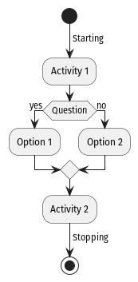

Introduction to the Software Development Life Cycle
Software Development Life Cycle
Overview
The SDLC outlines the typical process in a software project, the basic structure 1 is outlined below. Even though it may seem trivial it's worth reflecting on the steps to avoid making commitments that a developer will later regret. These commitments can often make it easier to discard an entire code base rather than unwind the development decisions, see e.g. 2.
-
Identify the Problem
- e.g. "I need to write a program that will calculate the area of a circle given the radius."
- Ensure it's not an XY problem
- e.g. "I need to write a program that will make it faster to manually transcribe invoices", in this case, maybe the invoices should be digitized instead.
-
Plan the Solution
- Estimate the effort involved
- Break the problem down into smaller problems
- Prioritize the problems
- Consider the 2 language problem
- e.g. Write a MWE 3 as a CLI in Python or jump straight into the GUI in C++?
- Create a todo list, e.g.
.org,todo.txtKanban board etc.
-
Implement
-
Create a notebook for logs, e.g.
.md,.orgetc. - Write the Documentation
- Template the scaffolding, e.g. a CLI
- Write the tests
-
Implement a dependency management system, e.g. Cargo, Poetry,
requirements.txt - Write the code
-
Create a notebook for logs, e.g.
-
Testing
- Drive it, e.g. seek feedback from colleagues and a user and evaluate:
- Reproducability -- does it build?
- User Interface (e.g. CLI arguments or GUI keybindings)
- User Experience (e.g. error messages)
- This is more comprehensive than a mere test suite
- Drive it, e.g. seek feedback from colleagues and a user and evaluate:
-
Deployment
- Cut a release, compile it and distribute it
- The difficulty of this step leans heavily on the choices made in the previous steps
-
e.g. This is a lot easier:
pipx install git+https://github.com/user/cool_project.git -
Than this:
git clone https://github.com/user/cool_project.git cd cool_project check make sudo make installFrom here a user would be required to create a
.PKGBUILDor atleast a container if they wanted to keep there system reproducable.
-
- The difficulty of this step leans heavily on the choices made in the previous steps
- Cut a release, compile it and distribute it
-
Maintenance
- Keep the project up to date with changing dependencies
- This is easier if the project is well documented and has a test suite
- Easier still if dependency versions are pinned
- This is easier if the project is well documented and has a test suite
- Easier
- Keep the project up to date with changing dependencies
Different Models of SDLC
Even though the SDLC may seem linear, in practice it is often iterative and cyclical. The most common models are:
- Iterative
- Spiral
- Agile
These are described below.
Iterative
The iterative process begins with a small subset of requirments and adds to those requirements as the project expands.
This is a simple approach but can lead to feature creep.
Waterfall
In the waterfall model, the project is planned in phases that are completed in sequence. This is a more traditional approach to software development.
This can give a clear view of the project but can be difficult to change once the project is underway.
Spiral
The spiral model is an iterative approach that uses the waterfall model within each iteration.
This can be a good way to get the best of both worlds but creates more management overhead.
Agile
Agile is an iterative approach that breaks the project into phases that can be changed as the project develops.
This involves a lot of reflection and discussion to identify the direction the project should go.
Minimum Working Example
https://aws.amazon.com/what-is/sdlc/
Systems
Functional Decomposition
Concept
Many projects can be broken down into smaller modular components. Generally speaking, once a script gets longer than about 50 lines, this approach will make things a lot easier to manage.
shape = "circle"
dim = 5
if shape == "circle":
area = 3.14 * dim ** 2
elif shape == "square":
area = dim ** 2
elif shape == "triangle":
area = 0.5 * dim ** 2
elif shape == "triangle":
area = 0.5 * dim ** 2
else:
area = 0
It's very difficult to debug this code, and it's not very readable. It would be better to break it down into smaller components:
def area_of_circle(radius):
return 3.14 * radius ** 2
def area_of_square(side):
return side ** 2
def area_of_triangle(base, height):
return 0.5 * base * height
if __name__ == '__main__':
print(f"Area of circle with radius 5: {area_of_circle(5)}")
This would allow us to test each component individually, include separate docstrings and re-use those functions later.
In some cases, it may be better to consider the problem in a more abstract way. For example, consider the following code:
class Shape:
def __init__(self):
pass
def area(self):
raise NotImplementedError("Subclasses must implement this method")
def perimeter(self):
raise NotImplementedError("Subclasses must implement this method")
class Circle(Shape):
def __init__(self, radius):
self.radius = radius
def area(self):
return 3.14 * self.radius**2
def perimeter(self):
return 2 * 3.14 * self.radius
class Square(Shape):
def __init__(self, side):
self.side = side
def area(self):
return self.side**2
def perimeter(self):
return 4 * self.side
class Triangle(Shape):
def __init__(self, base, height):
self.base = base
self.height = height
def area(self):
return 0.5 * self.base * self.height
def perimeter(self):
return self.base + self.height + (self.base**2 + self.height**2)**0.5
if __name__ == '__main__':
circ = Circle(5)
print(f"The area of a circle with radius = {circ.radius} circle is {circ.area()}")
In this example, each class can now be extended to include more features that are suitable for that shape and a parent class can serve as a template for the methods that are common to all shapes.
This is a more object-oriented approach to the problem.
Implementation
Consider the following series:
$$ Y \left(t\right) = \sum_{i = 1}^{n} \left[ \varepsilon_{\left[t-1\right]} \varepsilon_1 Y_{t-2} \theta_2 + Y_{\left[t-1\right]} \phi_1 + Y_{\left[t-2\right]} \right] $$
In Python, we can plot numbers like so:
import matplotlib.pyplot as plt
plt.plot([1, 2, 3, 4])
plt.show()
Produce the plot of that series using the following approaches:
1. Procedurally
2. Object Oriented
Visualizing Software Development
Introduction
Visual representations help understand and communicate design. In software design, we typically use the Unified Modeling Language (UML) to produce a set of diagrams 4. UML is a standard method to visualize the structure of a codebase and the flow of information through that code base. UML diagrams are not universally loved, see e.g. 5 by the developer of Mermaid.js. However, it is useful to be able to put together a diagram when necessary and UML is a good starting point. The most common diagrams are class diagrams and sequence diagrams which will be demonstrated below, for a more comprehensive review, the reader is referred to the PlantUML and Mermaid docs.
Software
Overview
The most common software for UML diagrams are:
- Mermaid
- PlantUML
Other software that can be used to produce visualizations of Software Development include:
- Graphs
- Dot
- Graphviz
- Diagrams
- Mermaid
- PlanTUML 6
- Tikz
- PyTikz
- Asymptote
- Draw.io
- Logic
- Schemdraw
- Gantt Charts
- Taskjuggler
Mermaid
Mermaid is written in Javascript, as a result most markdown renderers will support it, including VSCode, Obsidian and even Markor on Android. It is a simple way to produce high diagrams in markdown. The syntax is simple and easy to learn, for example below is is this document as a mindmap. This could be produced in plantuml [^1721123768] or mermaid [^1721123805]
mindmap
Introduction to the Software Development Lifecycle
Software Development Life Cycle
Overview
Different Models of SDLC
Iterative
Waterfall
Spiral
Agile
Systems
Functional Decomposition
Concept
Implementation
Visualizing Software Development
Introduction
Software
Overview
Mermaid
PlantUML
UML
Software
Static Analysis
Large Language Models
mindmap
Introduction to the Software Development Lifecycle
Software Development Life Cycle
Overview
Different Models of SDLC
Iterative
Waterfall
Spiral
Agile
Systems
Functional Decomposition
Concept
Implementation
Visualizing Software Development
Introduction
Software
Overview
Mermaid
PlantUML
UML
Software
Static Analysis
Large Language Models
PlantUML
Usage
Install plantuml from your package manager, e.g. on my system I use podman container with Arch:
distrobox enter arch
pacman -S plantuml
Then you write a file with the appropriate syntax, e.g. (reproduced from 7 )
@startuml
skinparam monochrome true
start
-> Starting;
:Activity 1;
if (Question) then (yes)
:Option 1;
else (no)
:Option 2;
endif
:Activity 2;
-> Stopping;
stop
@enduml
set dir ~/Studies/Teaching/2024/uhe/it2000_software_development/mdbook/src
set file (date +%s).png
set rel_file assets/$file
set abs_file $dir/$rel_file
cp file.png $file
echo ""

"GitHub - joelparkerhenderson/plantuml-examples: PlantUML eaxmples for UML, ERD, wireframes, mind maps, JSON, YAML, WBS, ASCII art, Gantt charts, C4 models, and more." [Online]. Available: https://github.com/joelparkerhenderson/plantuml-examples.
"Unified Modeling Language - Wikipedia." [Online]. Available: https://en.wikipedia.org/wiki/Unified_Modeling_Language#Diagrams.
Producing Diagrams
Static Analysis
A lot of software
Python has a package called pyreverse 8 that will generate UML diagrams via Graphviz. This can be useful for visualizing the structure of a codebase.
Large Language Models
With examples, many LLMs can be used to generate code, but they can also be used to generate documentation, e.g. the following is a Fabric prompt to generate a mermaid diagram:
cat /tmp/file.md |\
fabric \
--remoteOllamaServer=http://localhost:11434 \
--model codestral:latest \
--pattern $(fabric --list | fzf) \
--stream | wl-copy && notify-send "done"
In this example I've use ollama, a wrapper around llama.cpp to run the inference locally on my own machine.
Rarely will the results be exactly what you need but they make an excellent starting point! More importantly, by increasing the temperature and resampling you will have a large range of examples that can help you iterate on your own ideas.
It can be helfpul to browse through the documentation and online cheat-sheets 9
For example, codestral produced the following output using that prompt and the code from above:
classDiagram
class Shape{
+area()
+perimeter()
}
note for Shape "This is simply a template"
note for Square "Should square inherit from Rectangle?"
class Circle{
-radius: int
+area(): float
+perimeter(): float
}
class Square{
-side: int
+area(): float
+perimeter(): float
}
class Triangle{
-base: int
-height: int
+area(): float
+perimeter(): float
}
Shape <|-- Circle
Shape <|-- Square
Shape <|-- Triangle
[!NOTE] Produce a UML a diagram